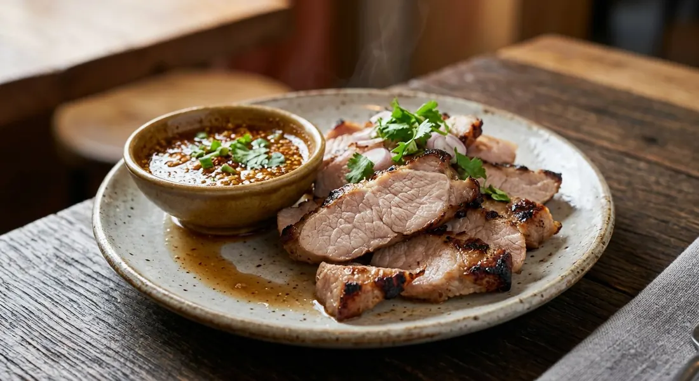

Marbled pork neck marinated and grilled until the fat melts into the meat, sliced thin and dunked in nam jim jaew — the toasted-rice and tamarind dip.

คอหมูย่าง is the Isan street-stall staple that made the pork neck the star of every Thai grill — skewered, laid over charcoal, sliced and piled next to sticky rice and som tum. Wongnai's recipe writer gives it a better name: คอหมูสะดุ้งไฟ, "the neck that flinches at the fire" — the cut is so marbled that the fat spits when the heat finds it.
The marinade is short work, and deliberately so: a home marinade runs thirty minutes; the shop versions go overnight. The flavourings are a fixed trio across the sources — salt, pepper, garlic, coriander root — sweetened and sauced. Where the sources part ways is the tenderiser: Wongnai's home recipe uses honey and evaporated milk, the dairy trick that keeps the outside from toughening before the inside cooks.
Then there's the dip. Nam jim jaew is the reason the dish travels: fish sauce, palm sugar, tamarind or lime, chilli flakes and — the non-negotiable — toasted rice powder, ground from jasmine rice dry-roasted in the pan. The smokiness of the jaew meets the smokiness of the charcoal and the neck does the rest.
One warning appears in Thai Hokkaido's version and belongs in every kitchen: cut the neck not too thick. Too thick, and the outside chars before the inside is done — the classic home-grill failure.
| Thai | English | Amount |
|---|---|---|
| เนื้อสันคอ | Pork neck | 500 g |
| น้ำมันหอย | Oyster sauce | 2 tbsp |
| เกลือ | Salt | 2 tsp |
| น้ำผึ้ง | Honey | 2 tbsp |
| นมข้นจืด | Evaporated milk | ¼ cup |
| สามเกลอ (รากผักชี กระเทียม พริกไทย) | Coriander root, garlic and peppercorns, pounded | 1 tbsp |
| ซีอิ๊วขาว | Light soy sauce | 3 tbsp |
| ผักกาดหอม / แตงกวา / มะเขือเทศ | Lettuce, cucumber, tomato | to serve |
| — Nam jim jaew — | ||
| น้ำปลา | Fish sauce | 3 tbsp |
| น้ำตาลปี๊บ | Palm sugar | 2 tbsp |
| น้ำมะนาว | Lime juice | 1 tbsp |
| น้ำมะขามเปียก | Tamarind water | 1 tbsp |
| พริกป่น | Chilli flakes | 2 tsp |
| ข้าวคั่ว | Toasted rice powder | 1 tsp |
| ต้นหอม ผักชี ผักชีฝรั่ง | Spring onion, coriander, sawtooth coriander | to garnish |
The charcoal batch (TrueID): 1 kg pork neck, ½ tbsp peppercorns, 1 head Thai garlic, 1 tbsp palm sugar, 2 tbsp oyster sauce, 1 tbsp seasoning sauce, 1½ tbsp fish sauce — marinated overnight. The quick pan version (Golden Mountain): pounded salt, peppercorns, coriander root and garlic with 2 tbsp oyster sauce and seasoning sauce, rested just 15 minutes.
The tenderiser. Wongnai's home version sweetens with honey and softens with evaporated milk. Everyone else reaches for palm sugar; Golden Mountain uses no sugar at all, letting the oyster and seasoning sauces carry it.
The rest. Golden Mountain: 15 minutes. Wongnai and Thai Hokkaido: 30. TrueID: 30–60 minutes if you fork it, overnight for the full charcoal treatment. TrueID's UGC recipe goes furthest — 6 to 12 hours so the marinade reaches the centre of the meat.
The fire. Pan-grilled at Wongnai and Golden Mountain; charcoal at TrueID and Thai Hokkaido — TrueID insists on it "for the scent". The UGC recipe allows an air fryer.
The jaew's sour. Lime alone at Thai Hokkaido and Golden Mountain; tamarind alone at both TrueID recipes; both at Wongnai. The tamarind-only jaew is darker, deeper and leans Isan; the lime version is brighter.
The jaew's base. Fish sauce in four of the five. Golden Mountain — the soy-sauce maker — builds its jaew on light soy instead, with mint added, the only source to use it.
The marinade's extras. Thai Hokkaido is the outlier: dark soy, chilli flakes and toasted rice powder go into the marinade itself, not just the dip. TrueID's UGC recipe is a palm-sugar bomb — 200 g to a kilo of pork, two ladles each of seasoning sauce and oyster sauce.
The garnish. Shallots in the jaew at Golden Mountain and TrueID; onion and spring onion at Thai Hokkaido; spring onion, coriander and sawtooth coriander at Wongnai.
This recipe is translated from the following Thai-language sources. Where they disagree, we've said so.
1. Wongnai (จิ๋วหิวโซ) — "วิธีทำ 'คอหมูย่าง' เมนูหมูเด็ดพร้อมสูตรน้ำจิ้มแจ่วแซ่บสะท้านทรวง" (the recipe used here) — wongnai.com
2. TrueID (กินได้อร่อยด้วย) — "แจกสูตร! คอหมูย่าง เตาถ่าน พร้อมน้ำจิ้มแจ่ว แซ่บสะท้านลิ้น" (the charcoal overnight version) — food.trueid.net
3. Thai Hokkaido — "สูตรเด็ด วิธีหมักคอหมูย่างให้อร่อยนุ่ม จนหยุดกินไม่ได้" (the butcher's marinade) — thaihokkaido.co.th
4. Golden Mountain Sauce — "หมูย่างจิ้มแจ่ว" (the 15-minute pan version, soy-based jaew) — goldenmountainsauce.com
5. TrueID — "สูตรหมักคอหมูย่าง พร้อมสูตรน้ำจิ้มแจ่วแซ่บๆ" (the 6–12 hour marinade) — food.trueid.net